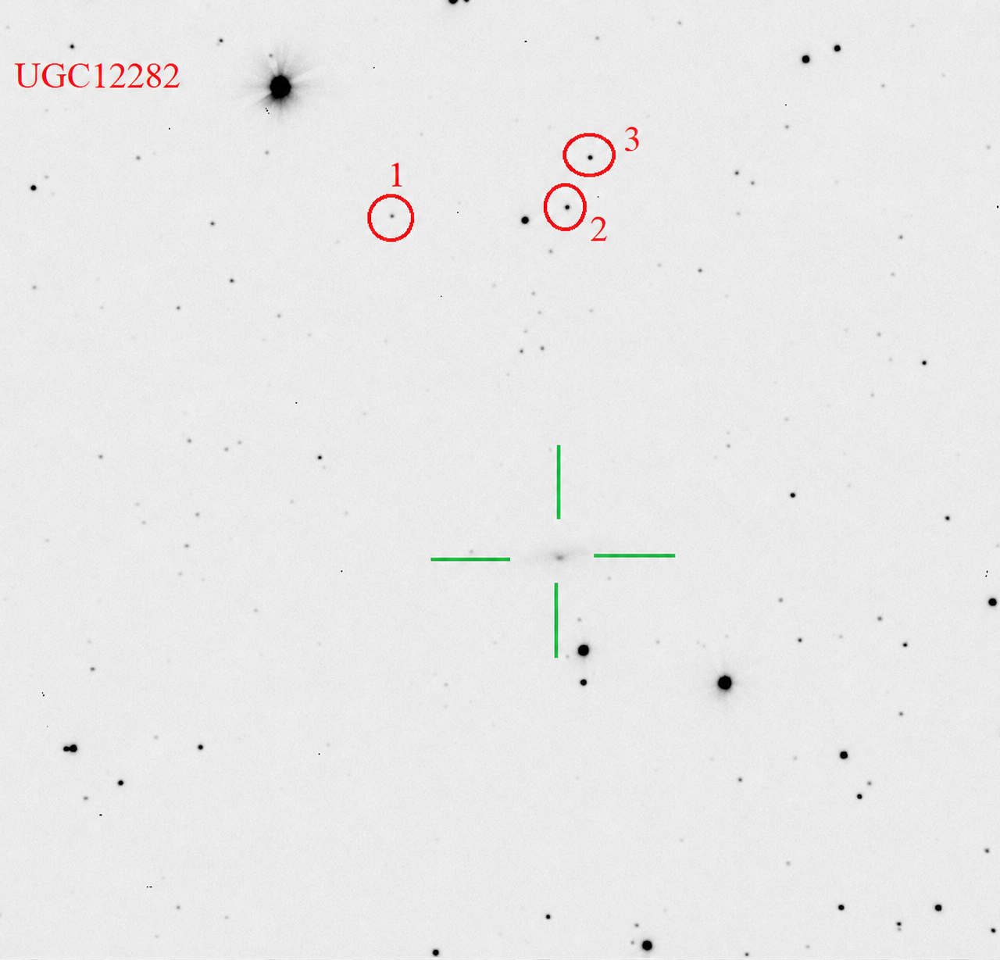

UGC 12282
PGC 70163 · 2MIG 3110
Interactive DSS2 view. The AGN is labelled “AGN”; comparison stars are labelled 1, 2 and 3 to match the supplied finding chart and table below.
The supplied UGC 12282 standard-star table contains three numbered comparison stars with J2000 coordinates, V magnitudes and B−V colours. The numbering is preserved exactly in the interactive and static charts.
Uncertainty convention.
Star 1 is listed with a formal V uncertainty of 0.000 mag in the supplied table. The raw zero is retained in the machine-readable file and displayed here as an unavailable uncertainty.
Data scope.
The supplied table does not contain the observing date, exposure time, number of frames or adopted aperture, so these quantities are left unspecified on this page.
Static finding chart

Comparison-star sequence — supplied V and B−V photometry
| ID | RA (deg) | Dec (deg) | V ± σV | B−V ± σ |
|---|---|---|---|---|
| 1 | 344.811083 | +40.902881 | 15.759 ± — | 1.066 ± 0.114 |
| 2 | 344.812843 | +40.933759 | 14.721 ± 0.036 | 0.777 ± 0.085 |
| 3 | 344.824663 | +40.937892 | 14.658 ± 0.047 | 0.664 ± 0.124 |
Source:
Izviekova et al. (working dataset) — UGC 12282 optical monitoring
Target coordinates and the 2MIG identifier follow the published 2MIG isolated-AGN sample; comparison-star values come from the supplied standard-star table.
Target coordinates and the 2MIG identifier follow the published 2MIG isolated-AGN sample; comparison-star values come from the supplied standard-star table.